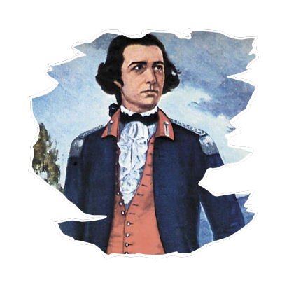

QUEM FOI TIRADENTES

Joaquim José da Silva Xavier, também conhecido pelo apelido de “Tiradentes”, consagrou-se por sua
participação ativa na Inconfidência Mineira. Tragicamente, ele foi o único dos envolvidos no movimento a
receber a pena de morte, uma vez que os outros envolvidos foram perdoados pela Coroa Portuguesa.
De uma família de origem humilde, Joaquim José nasceu na Capitania de Minas Gerais, em 12 de novembro de
1746. Com a morte prematura dos pais, Joaquim José precisou exercer inúmeros trabalhos ao longo de sua vida,
como a de dentista amador, função que lhe deu o apelido de “Tiradentes”. Ele também havia trabalhado na
mineração, porém, foi no posto de alferes nos quadros da cavalaria imperial que Tiradentes alcançou certa
estabilidade. Apesar da pouca instrução, ele era um republicano convicto e adepto dos ideais do Iluminismo.